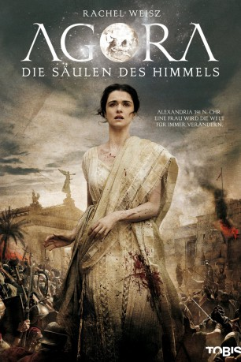
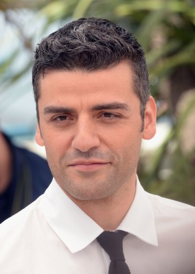
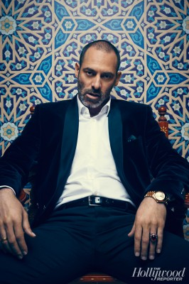
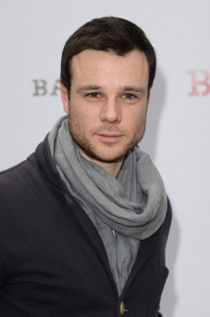
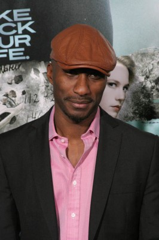
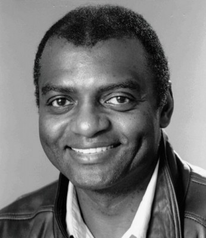
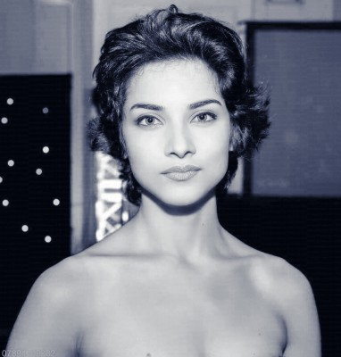
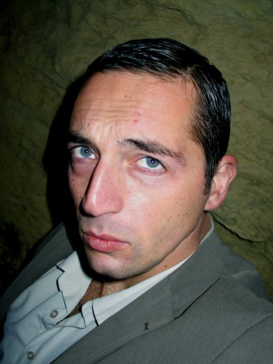

#2136 Agora - Die Säulen des Himmels
 
 IMDB-Wertung: 7.2 / 10
IMDB-Wertung: 7.2 / 10  Metascore: 55
Metascore: 55 
Alexandria, 391 n. Christi. Nicht nur für ihre Schönheit, sondern auch ihre Intelligenz wird Hypatia bewundert, die Mathematik, Astronomie und Philosophie unterrichtet. Von zwei Männern, einem ehemaligen Sklaven und einem ehemaligen Schüler, wird sie geliebt, doch von anderen auch misstrauisch beobachtet. Für fundamentalistische Christen, die immer mehr Macht gewinnen, ist die Heidin eine Reizfigur. Für konservative Kräfte, die eine Frau mit Einfluss und Verstand nicht dulden, auch. Hypatias tragisches Ende ist damit vorgezeichnet.
Jahr: 2009
Dauer: 127 Minuten
FSK: 12
Land: Spanien Studio: Universal PicturesTonspuren: DTS - ,
Untertitel:
Auflösung: 1080p (1920x816) Größe: 8724 MB
Genre: Abenteuer, Drama, Geschichte, Liebe
Regisseur: Alejandro Amenábar
Drehbuch: Alejandro Amenábar, Mateo Gil
Soundtrack: Dario Marianelli
Darsteller:
 Rachel Weisz als Hypatia
Rachel Weisz als Hypatia- Max Minghella als Davus
-  Oscar Isaac als Orestes
-  Ashraf Barhom als Ammonius
- Michael Lonsdale als Theon
-  Rupert Evans als Synesius
 Homayoun Ershadi als Aspasius
Homayoun Ershadi als Aspasius- Richard Durden als Olympius
- Manuel Cauchi als Theophilus
- Oshri Cohen als Medorus
- Yousef 'Joe' Sweid als Peter
-  Clint Dyer als Hierax-Parabolano
-  George Harris als Heladius Dignitary
-  Amber Rose Revah als Sidonia
- Christopher Dingli als Student
- Alan Paris als Bodyguard
- Ray Mangion als Crier via Canopica
- Nikovich Sammut als Roman Officer
- Sami Samir als Cyril
- Omar Mostafa als Isidorus
- Charles Thake als Hesiquius
- Harry Borg als Prefect Evragius
- Sam Cox als Pagan Rival
- Sylvester Morand als Dignitary
- Paul Barnes als Dignitary
- Jordan Kiziuk als Hypatia's Disciple
- Francis Ghersci als Hypatia's Disciple
- Jonathan Grima als Hypatia's Disciple
- Edward Caruana Galizia als Student
- Stephen Buhagiar als Parabalano
- Joseph Camilleri als Parabolano
- Charles Sammut als Philosopher
- Michael Sciortino als Philosopher
- Joe Quattromani als Old Philosopher
- Alan Meadows als Rabbi
- Peter Borg als Pagan Priest
- Portelli Paul als Troublemaker
- Robert Ricards als Roman Officer
- John Montanaro als Bodyguard
-  Malcolm Ellul als Bodyguard
- Mary Rose Bonello als Old Jewish Woman
- Andre Agius als Child
- Frederick Testa als Christian
- Sean Buhagiar als Christian Student
- Theresa Celia als Christian Woman
- Frank Tanti als Deacon
- Anthony Ellul als Deacon
- Pierre Stafrace als Deacon
- Christopher Raikes als Frightened Hellenic Man
- Clare Agius als Frightened Hellenic Woman
Datei: X:\2009(A-F)\Agora - Die Säulen des Himmels (2009, FSK12, 1920x816).mkv seit 07.10.2015
Festplatte: HD 2008(G-Z)-2009(A-F)
 Es gibt insgesamt 91 Filme in der Gruppe '2009(A-F)'
Es gibt insgesamt 91 Filme in der Gruppe '2009(A-F)'